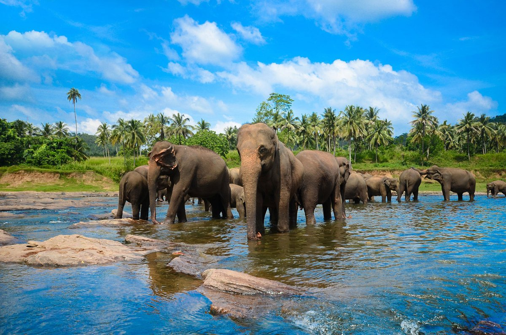
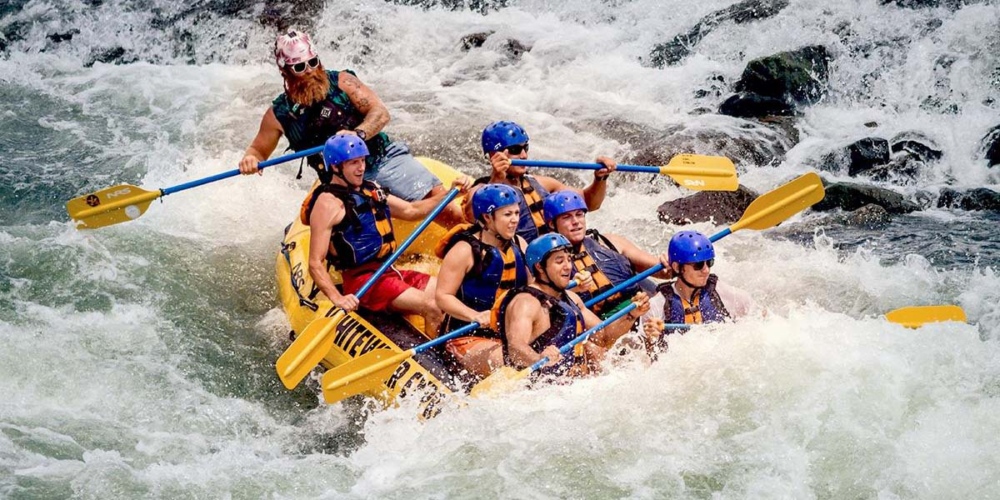
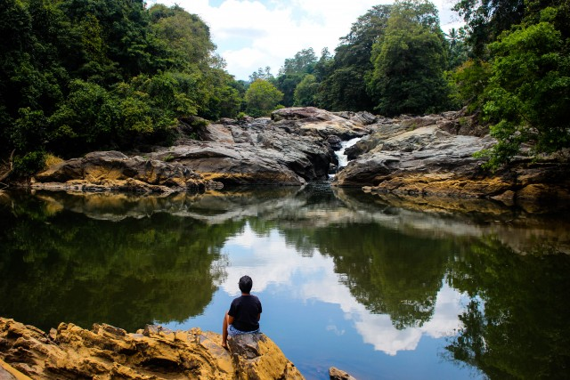

| Name of the Beautiful Places | Pictures | Name of the Beautiful Places | Pictures |
|---|---|---|---|
|
 Pinnawala Elephant Orphanage is an orphanage, nursery and captive breeding ground for wild Asian elephants located at Pinnawala village, 13 km northeast of Kegalle town in Sabaragamuwa Province of Sri Lanka. Pinnawala has the largest herd of captive elephants in the world. In 2011, there were 96 elephants, including 43 males and 68 females from 3 generations, living in Pinnawala.The orphanage was founded to care and protect the many orphaned unweaned wild elephants found wandering in and near the forests of Sri Lanka. It was established in 1975 by the Sri Lanka Department of Wildlife Conservation . |
|
 Kitulgala is a small town in the west of Sri Lanka. It is in the wet zone rain forest, which gets two monsoons each year, and is one of the wettest places in the country.Large numbers of people make the excursion from Colombo at weekends to enjoy the beautiful scenery, play in the river, and to have an excellent rice-curry lunch at the local restaurants. The Kelani River is wide at Kitulgala, but it is shallow apart from a deep channel near the opposite bank. So, in the drier months, it provides a safe and attractive place to swim and play. It is a base for white-water rafting, which starts a few kilometers upstream. |
|
 Mawanella is a town which belongs to the Kegalle district in the Sabaragamuwa Province of Sri Lanka. It lies between Kegalle and Kadugannawa along the Colombo-Kandy road. The area consists of four administrative areas, namely Mawanella, Aranayake, Rambukkana and Hemmathagama. |
|
 This 3m tall Bo Ella Fall is served by a minor bo (Ficus religiosa) leaf-shaped stream (formed by the Ma Oya [river]) that begins in the Aranayake Rassawa Mountain, and also serves the Ahupini Falls. Before the Bo Falls the water flows through rocks to form two distinct streams and cascades into a large rock pool, where it exits through a 2m opening. This is a popular bathing and picnic location among the locals. Source : www.srilankanwaterfalls.net The fall is situated in the Kegalle District Mawanella Provincial Secretariat. Take the Mawanella – Yatimahana road, and the fall can be found 1km away from the bus stop. Alternatively, take the Mawanella – Rambukkana road for about 6km towards Mawanella, to Randiwela village. Turn left at Randiwella junction, and walk for 6km until the fall is reached. |